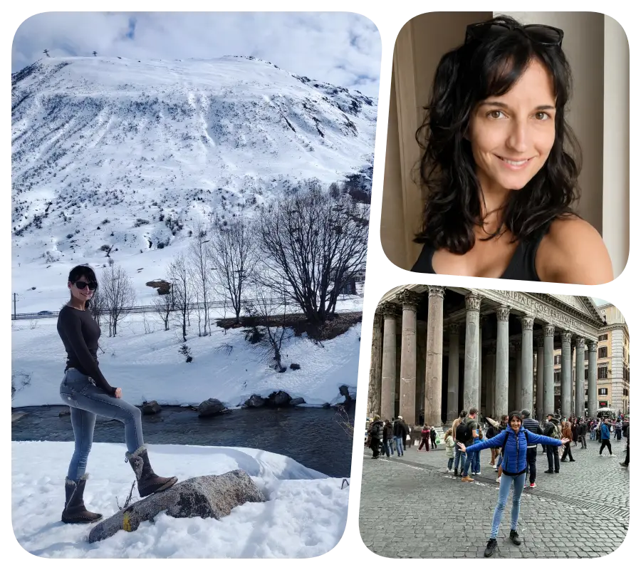

Ha senkinek nem kellene megfelelned, ugyanazt választanád?
Kérdések, amelyek tovább dolgoznak benned
Mi választ helyetted, amikor azt hiszed, te döntesz?
Nem minden kérdésre kell rögtön válaszolni. Van, amelyik előbb lecsendesíti a megszokott magyarázatokat - és csak utána mutatja meg, mi van alattuk.
Kinek a hangját hallod, amikor azt mondod: „nem lehet” vagy „nem tudom”?
Ő hiányzik — vagy az, akinek mellette érezted magad?
Lehet, hogy nem a válasz hiányzik - hanem a kérdés, amely mellett már nem tudsz ugyanúgy továbbmenni.
Rólam

Mélyen figyelek, gyorsan kapcsolok, és szeretek mozgásban lenni — fejben, testben, életben.
Programozóként rendszerekben és összefüggésekben gondolkodom, pszichológia hallgatóként pedig azt keresem, mi történik a látható működés alatt. Egyszerre tudok rendszerszinten gondolkodni és emberi mélységekben érzékelni.
Szeretek kérdezni, megérteni és kapcsolódni. Nemcsak azt figyelem, mi történik, hanem azt is, mi ismétlődik - és milyen történetet mesélünk közben önmagunknak.
Megannyi adományozási projekt és kórházi önkéntesség - elsősorban gyermekek mellett - van mögöttem. A segítségnyújtás számomra sosem külön projekt volt, hanem az életem természetes része.
Egyszerre érdekel a rendszer és az ember.
A logika és az érzés. A minta és az, ami alatta él.
Szakmai hátterem
Mérnök informatikusként végeztem, és évek óta a rendszerek, összefüggések világában dolgozom pénzügyi területen.
Közben egyre erősebben fordultam az emberi működés, az önismeret és a pszichológia felé. Számtalan szakkönyvet olvastam és előadást hallgattam végig a témában.
2025 tavaszán sikeresen elvégeztem az Intuitív Life Coach képzést, ezzel hivatalos képesítést szerezve, majd 2025 őszén teljesítettem egyetem keretében a Pszichológiai alapismeret kurzust, sikeres záróvizsgával. Jelenleg pedig pszichológia szakos hallgatóként mélyítem tovább a tudásomat.
Számomra a két világ nem különül el egymástól. Ugyanaz a kíváncsiság vezet a programozásban, az önismeretben és az emberi történetek megértésében: hogyan állnak össze a látszólag különálló elemek egy érthető mintázattá és miért különleges az ember abban, ahogyan az érzelmek és racionalitás egymás mellé áll bennünk.
Mérnök informatikus
Intuitív Life Coach
Pszichológia szakos hallgató
Írások
Az írás nálam nem tartalomgyártás, hanem gondolkodási forma. Hogyan válunk lassan pontosabbá önmagunk számára.
Önismeret. Emberi működés. Veszteség. Felismerés. Belső csend.
Az út maga az élet
Mi történik, amikor rájövünk, hogy nem egy cél felé haladunk, hanem maga az út a lényeg, amit megélünk?
Tovább olvasom →Anaïs Nin – avagy a mélység és igazi önreflexió
Mit jelent valóban mélynek lenni? És mi történik, amikor valaki nem menekül a saját belső valósága elől?
Tovább olvasom →A hitben hiszek
A hit számomra nem vallás vagy dogma, hanem az a belső erő, amely mozgásban tart akkor is, amikor még nincs válasz minden kérdésre.
Tovább olvasom →Korábbi személyes blogom archívuma itt olvasható: szaida.blog.hu
„Nem mindig tanácsra van szükségünk. Néha arra, hogy valaki segítsen meghallani, amit belül már régóta tudunk.”
A beszélgetéseimben ezt a teret keresem: ahol nem kell szerepet játszani, nem kell azonnal jól lenni, és nem kell mindent egyszerre megoldani. Elég elkezdeni pontosabban látni.
Közös gondolkodás
Önismereti coaching
Nem kell pontosan tudnod, mit kérdeznél. Elég, ha érzed, hogy valami nem mozdul. Egyéni önismereti coaching (5-10 alkalmas) folyamatokat vállalok azoknak, akik szeretnének tisztábban rálátni saját működésükre, döntési helyzetükre vagy ismétlődő kapcsolati mintáikra.
Akkor lehet helye ennek a közös munkának, ha:
újra és újra ugyanoda érkezel, bár mást szeretnél
érzed, hogy változtatnál, de nem látod az irányt
önbizalomhiánnyal küzdesz
szeretnéd jobban megérteni a saját mintáidat és reakcióidat
A folyamat fókusza
Azokat a kérdéseket hozom, amelyek segítenek észrevenni a működő mintát, és teret nyitnak a saját válaszodnak.
- önismeret
- önbizalomhiány
- sématerápiás szemlélet
- fiatal felnőttkori bizonytalanság
- iránykeresés
- kapcsolati minták
A folyamat nem pszichoterápia, nem pszichológiai kezelés és nem krízisellátás. Inkább közös gondolkodás, tükrözés és belső iránykeresés. Tér, ahol segítek rálátni magadra és az emberi működésre.
Szeretném meglátni a mintát →Kapcsolat
Mi az, amit már túl sokszor gondoltál végig egyedül?
Nem kell kész kérdéssel vagy pontos megfogalmazással érkezned. Ha szeretnél önismereti folyamatra jelentkezni, írj néhány mondatot arról, mi az, ami most nem mozdul.